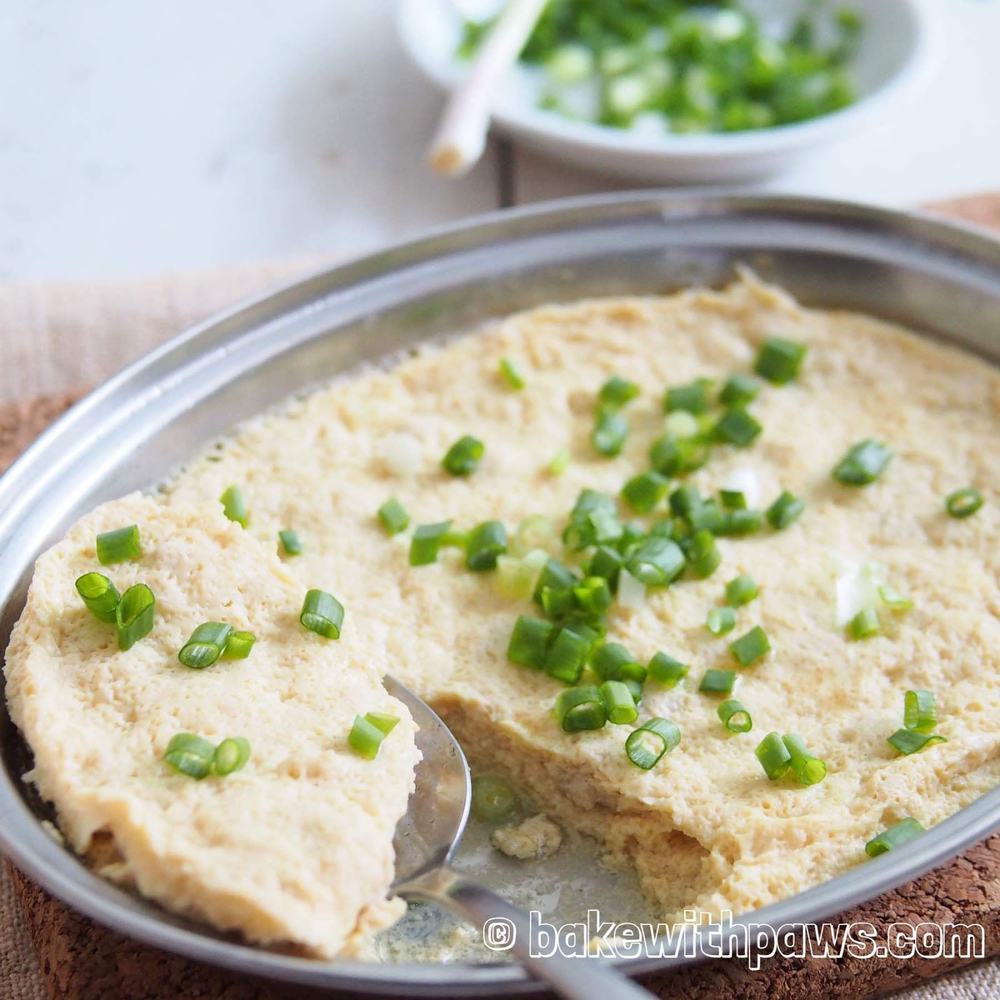
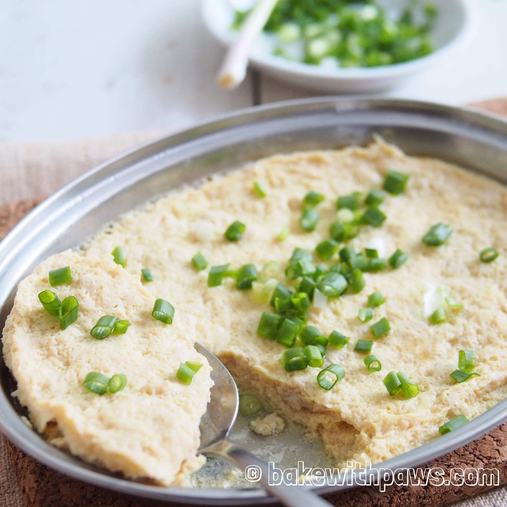
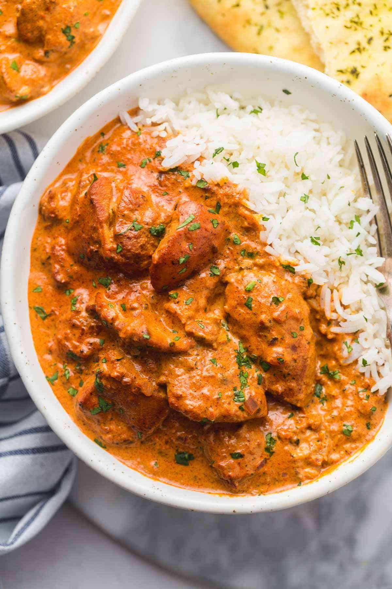
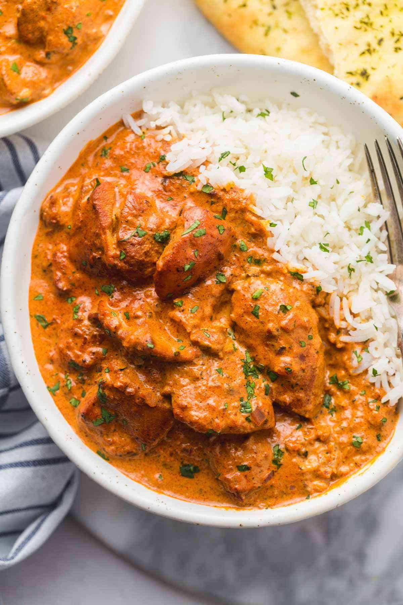

From My Kitchen to Yours
Chinese Dumplings

Chinese dumplings, also known as Jiaozi, are a beloved staple in Chinese cuisine, enjoyed by many during family gatherings, especially during the Chinese New Year. These delightful pockets of joy are versatile, as they can be steamed, boiled,or pan-fried, offering a different culinary experience with each method. They can be filled with a variety of fillings such as pork, shrimp, vegetables, or a mixture, and paired with a simple dipping sauce, they become a dish that is almost impossible to resist. Crafting them from scratch provides a warm, familial, and authentic Chinese dining experience, where everyone can gather around and enjoy the process of making and eating them together.
Recipe Ingredients
- Dumpling wrappers (store-bought or homemade)
- Ground pork or chicken
- Shrimps (optional)
- Cabbage or Chinese chives
- Pure vanilla extract
- Ginger, grated
- Garlic, minced
- Soy sauce
- Sesame oil
- Salt
- Salt and pepper to taste
Recipe Steps
- In a large bowl, combine the meat, shrimps (if using), cabbage or chives, ginger, and garlic. Mix in soy sauce, sesame oil, salt, and pepper.
- Lay out the dumpling wrappers on a clean surface. Add a small spoonful of the filling to the center of each.
- Wet the wrapper edges with water. Fold it to create a half-moon shape; seal the edges by pinching, create pleats if desired.
- Repeat until all wrappers are filled.
- To boil, bring a pot of water to a boil, add the dumplings, and cook until they float, about 3-4 minutes.
- for a pan-fried option, heat oil in a pan, add the dumplings, cook until golden at the bottom, then add water and cover to steam.
- Serve hot with a dipping sauce made from soy sauce, a bit of sesame oil, optionally with chopped green onions and a splash of vinegar.


Stewed Eggs with Minced Meat

Stewed eggs with minced meat is a comforting and hearty dish that brings together the richness. of eggs with the savory notes of minced meat, all stewed to perfection in a flavorful sauce.This dish is a staple in many households, offering a satisfying and protein-packed meal that is both nourishing and delicious. It pairs wonderfully with a bowl of steamed rice or noodles.
Recipe Ingredients
- Eggs, hard-boiled and peeled
- Minced meat (pork or chicken)
- Soy sauce
- Ginger, grated
- Garlic, minced
- Green onions, chopped
- Star anise (optional)
- Sesame oil
- Salt and pepper to taste
Recipe Steps
- In a bowl, mix the minced meat with soy sauce, ginger, and garlic. Set aside to marinate for a while.
- In a pot, heat some oil and sauté the marinated meat until it turns brown and is cooked through.
- Add the hard-boiled eggs to the pot and stir gently to combine with the meat.
- Add enough water to cover the ingredients, bring to a boil, then add soy sauce, star anise (if using), and season with salt and pepper.
- Reduce the heat and let it simmer for 15-20 minutes, allowing the flavors to meld and the sauce to thicken slightly.
- Before serving, stir in the sesame oil and garnish with chopped green onions.
- Serve hot with a side of steamed rice or noodles.
 


Coca-Cola Chicken

Coca-Cola chicken is a delightful dish that combines the sweetness of Coca-Cola with the savory taste of chicken, creating a unique and delicious flavor profile The Coca-Cola not only adds a sweet note but also tenderizes the chicken, making it soft and juicy. It's a quick and easy recipe that is sure to be a hit at family dinners
Recipe Ingredients
- Chicken thighs or breasts
- Coca-Cola
- Soy sauce
- Ginger, grated
- Garlic, minced
- Green onions, chopped
- Sesame oil
- Salt and pepper to taste
Recipe Steps
- In a bowl, marinate the chicken with Coca-Cola, soy sauce, ginger, and garlic. Let it marinate for at least 30 minutes.
- In a pan, heat some oil over medium heat. Add the chicken pieces and cook until they turn golden brown.
- Add the marinade to the pan and bring it to a boil. Reduce the heat and let it simmer until the sauce thickens.
- Stir in the sesame oil and green onions. Cook for another 2-3 minutes.
- Serve the Coca-Cola chicken hot with steamed rice or noodles.
Additional Food Images


Masala Dish
The Masala dish is a cornerstone in Indian cuisine, known for its rich blend of spices that create a symphony of flavors in every bite. It can be made with a variety of main ingredients including chicken, lamb, or vegetables. The secret to a great Masala dish lies in its spice blend, which includes a mix of ground spices such as coriander, cumin, and garam masala, giving the dish its distinctive aromatic and spicy character.
Recipe Ingredients
- Chicken or lamb pieces (or a mix of vegetables for a vegetarian option)
- Onions, finely chopped
- Tomatoes, chopped
- Ginger-garlic paste
- Green chilies, slit
- Coriander powder
- Cumin powder
- Garam masala
- Turmeric powder
- Red chili powder
- Fresh coriander leaves for garnish
- Salt to taste
- Oil for cooking
Recipe Steps
- Heat oil in a pan, add the chopped onions, and sauté until they turn golden brown.
- Add the ginger-garlic paste and green chilies, and sauté for a few more minutes.
- Add the chopped tomatoes and cook until they turn mushy and the oil separates from the masala.
- Add the chicken, lamb, or vegetables along with the dry spices and mix well.
- Cover and cook on a low flame until the main ingredient is cooked through and the flavors are well blended.
- Garnish with fresh coriander leaves and serve hot with naan or basmati rice.
Additional Food Images
 
